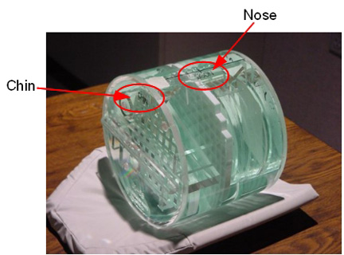
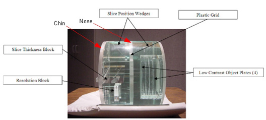
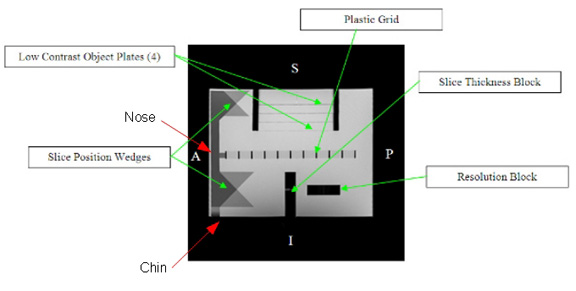
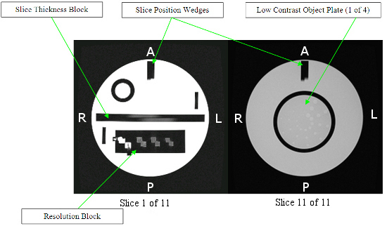
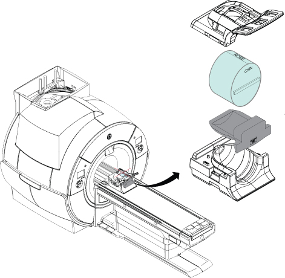
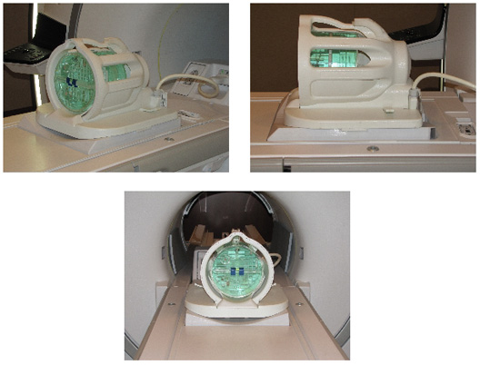
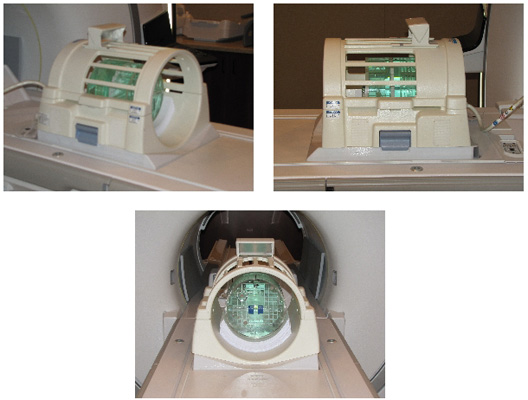
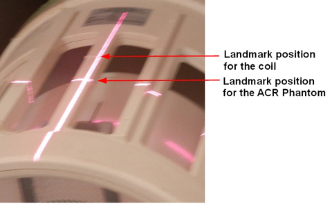
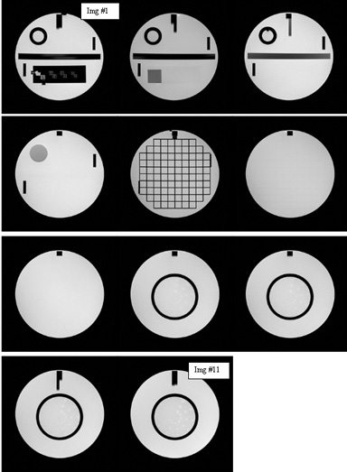

- 00000018WIA30F1B030GYZ
- id_123741021.41
- Jul 28, 2025 4:51:22 PM
ACR accreditation scan troubleshooting
ACR accreditation scan troubleshooting.
This document provides assistance in doing the ACR phantom scanning with ACR sagittal localizer, T1, and T2 protocols and analysis on GE HealthCare 1.5T and 3.0T cylindrical scanners, and illustrates the issues that may be encountered. Tips for 1.5T and 3.0T cylindrical scanners provides tips on specific issues that might effect this scanning procedure.
Prerequisite: Complete system calibration (clinically ready).
No service key is needed for this procedure.
ACR phantom scanning
Taking time to properly position the phantom reduces the time needed to complete these procedures. Setup is an iterative process, with phantom repositioning between each scan, repeated as many times as necessary to center the phantom in all three planes.
During this procedure, several measurements need to be taken and recorded. Use the ACR Accreditation Scan Measurements form to record the measurements. See ACR Accreditation Scan Measurements.
ACR phantom
There are two phantoms that are approved for accreditation of MR scanners: the large ACR and medium ACR MRI phantoms. The phantom must be purchased from ACR.




ACR phantom positioning: introduction
Ideally, the site should select the head-type coil they use most often for routine clinical head imaging for this ACR phantom scanning. Use the largest phantom that fits in the coil.
The ACR phantom scanning consists of the following:
- FGRE 3-Plane 2D localizers (3 images each), with phantom repositioning between eachNote Before doing the official scan, it is useful to run this scan ahead of time to make sure the landmark is correct.
- ACR sagittal localizer scan (explicitly prescribed, one sagittal slice)
- ACR T1 series (graphically prescribed, 11 slices, 11 images)
- ACR T2 series (same graphic Rx as ACR T1 series, 11 slices, 11 images)
Phantom setup
- Put the chosen head-type coil onto the patient cradle, into its normal clinical imaging position, and plug it in. Align, clamp, fasten (and so on) the coil using only those method(s) used to position it for routine clinical imaging. Make sure the coil is not off-center or rotated from its normal correct position.
- Get the ACR phantom (see Large ACR phantom).
The phantom has both CHIN and NOSE markings that are put where a patient’s chin and nose would be within the head-type coil for a head first, supine patient orientation. In this procedure, all ACR scanning is done with the head first, supine patient orientation. Therefore, the anterior/posterior (A/P) direction is perpendicular to the patient cradle, along the vertical direction with respect to the floor, along the physical Y gradient. The right/left (R/L) direction is along the physical X gradient direction. The superior/inferior (S/I) direction is along the physical Z gradient direction (in/out of the magnet bore, along magnet B0).
Notice 
- You will need something to raise and hold the phantom in a stable position with high spatial precision.
Some sites may have a special positioner intended for the ACR phantom in a particular head-type coil; however, we have often found these positioners to be flawed and/or poorly adjusted. If that positioner does not let you accomplish exactly what is described in this procedure, then put it aside.
White printer paper (without any printing or ink/toner on it) is the recommended stable, low compression, high resolution positioning material. You may need more than one stack and/or some folded paper “shims” to accurately position the phantom. Other foam or pads (nonferromagnetic) may be used as well.
Label and keep what you use so you do not have to re-measure or adjust things much for future ACR phantom scans.
- Physically center the ACR phantom at the center of the RF head type coil, along all three patient dimensions, before landmarking. This helps avoid axially asymmetric RF “bite marks” in the axial phantom images caused by uneven RF head type coil conductor proximity when the phantom is offset, especially along R/L or A/P.Line up the ACR phantom’s black S/I center marker with the head type coil’s center along S/I (Z). The amount of positioning adjustability will depend on which head type coil is being used.
Figure 5. Example of positioning of phantom in head neck unit (HNU) coil 
Figure 6. Example of positioning of large ACR phantom in 8HR brain coil 
Figure 7. Example of positioning of large ACR phantom in T/R head coil 
Notice:For the TR head coil in particular, put the ACR phantom’s black S/I center marker at the SPT landmark S/I position. The SPT landmark position is slightly inferior to the small protruding line on the coil’s top conductor run that splits the coil’s window into two halves (see Protrusion and landmark on head coil).
You can also find the SPT landmark location by putting the TLT head sphere in the head loader in the foam loader positioner into the TR head coil up until the point where the foam positioner’s front wing or end flange prevents the positioner from being pushed any further into the coil. The S/I position of the loader’s black landmark line then indicates the SPT landmark position with respect to the TR head coil. This same S/I position (relative to the TR head coil) is where the ACR phantom’s black landmark line should be positioned.
Figure 8. Protrusion and landmark on head coil 
- Go to the table foot and visually estimate the R/L and A/P centering of the phantom with respect to head type coil center, and reposition the phantom as needed to center it along R/L and A/P. Use a nonferromagnetic ruler if you think you need it. Also physically align the phantom so it is not rotated about the Z axis (using the phantom’s chin side external bubble level if present) and not rotated about the X or Y axes. The amount of positioning adjustability will depend on which head type coil is being used.
Do the best you can to visually monitor whether one adjustment has compromised another, and compensate accordingly. You will readjust the phantom again more precisely later. Iterative 3-plane localizer FGRE scans will be used, with phantom repositioning between each, to make sure that the phantom is centered and aligned.
Landmark/scan
Use the protocols defined in Table 2: Large and Medium Phantom scan parameters and approximate scan times on the Large/Medium Phantom Testing: MRI ACR web page for troubleshooting.
- Landmark precisely on the ACR phantom’s black S/I center line and select Advance To Scan.
- Select New Patient and use the following parameters:
- Name: ACR-head type coil name (example: ACR-8HRBrain).
- Patient ID: ACR-head type coil name (example: ACR-8HRBrain).
- Weight: 50 lbs.
- Enter the ACR Sag localizer protocol defined in Table 2: Large and Medium Phantom scan parameters and approximate scan times on the ACR web page.
- Click Start Exam.
- If choices appear, select dB/dt=First level, SAR=First level, and then select Accept.
- Save the series, and scan.
Adjustments
- Record the Auto Prescan determined values for Center Frequency, TG, R1, and R2 for future reference.
The head-type coil’s center along the patient A/P or vertical direction does not necessarily line up with that of gradient isocenter. That is, after you have centered the phantom in the head-type coil, landmarked, and scanned, the phantom may be still be offset along A/P (vertically) in the axial image display or equivalently along L/R (horizontally) in the sagittal image display, but that is fine. Do not further adjust the A/P or S/I positions of the phantom inside the head-type coil.
You do not need to measure the up/down offset of the phantom in any of the three localizer image displays, because:
- In the axial display, up/down is A/P, and you already adjusted the phantom’s A/P position versus the RF head-type coil by eye, which is sufficient.
- In the sagittal display, up/down is S/I, which the system handled automatically using Advance to Scan after you landmarked on the phantom’s S/I center.
- In the coronal display, up/down is S/I (same as sagittal reason above).
Therefore, measure only the left/right offset of the phantom in the axial image display.
- You will probably have to further adjust the phantom’s L/R offset (small adjustment).
A preferred method to determine the phantom’s offset in the L/R direction is to show the axial localizer image (full screen), turn on the display grid, and look at the L/R direction offset of the phantom’s grid (the middle vertical line) with respect to the display grid (the middle vertical line).
- You will almost certainly have to further adjust the phantom’s rotation about the X, Y, and Z axes.
A preferred method to determine the phantom’s rotation about an axis is to show the axial, sagittal, or coronal image (one image, full screen) and deposit a straight line cursor onto the display. Pick a straight reference edge on the phantom:
- For an axial image, use the phantom’s middle horizontal grid line (running horizontally in the image display) for the reference edge.
- For a sagittal image, use the phantom’s top edge (running horizontally in the image display).
- For a coronal image, use the phantom’s top edge (running horizontally in the image display).
Adjust the cursor’s length to match the full length of the reference edge. After resizing the cursor make sure it is still perfectly horizontal by making its angle display read 90.0 degrees. Now, without changing the cursor’s size or angle (keep it horizontal), move it to lie along, just barely above, but NOT directly on the appropriate reference edge. Examine the phantom’s reference edge with respect to the perfectly horizontal cursor to see if the phantom is tilted or rotated about the slice selection axis for that image (that is, about the physical axis perpendicular to that scan plane).
- Clockwise phantom rotation in the axial localizer corresponds to clockwise rotation of the phantom about the Z axis when looking straight into the bore from the table foot.
- Clockwise phantom rotation in the sagittal localizer corresponds to raising the phantom’s CHIN and lowering its forehead.
- Clockwise phantom rotation in the coronal localizer corresponds to clockwise rotation of the phantom about the Y axis when looking directly down onto the phantom (table) from above it.
- Complete steps 4.1 through 4.4 in order for the most recent trio of localizer images:
- Use the most recent axial localizer to guide adjustment of the phantom L/R offset. The phantom’s center should already be very close to the image field of view (FOV) center in the L/R direction. Move the phantom along L/R to center it (being careful not to offset it in the A/P direction or rotate it about any of the three axes). If the phantom fits so tightly in the head-type coil that the phantom cannot be moved along L/R even a small amount to center it horizontally to within ± 1 mm in the axial localizer, then use the localizer to measure the small L/R mm offset required to center it. This offset in mm, preceded by L or R to specify direction, will be entered later as part of the ACR sagittal localizer protocol to specify a sagittal slice offset to the phantom’s center. In most cases you should be able to center the phantom to within ± 1 mm so the later offset will be R0. Remember, the process will be iterative, so it is the last (most recent) L/R offset that needs to be retained and later used if needed.
- Use the most recent axial localizer to guide adjustment of the phantom rotation about Z.
- Use the most recent coronal localizer to guide adjustment of the phantom rotation about Y.
- Use the most recent sagittal localizer to guide adjustment of the phantom rotation about X.
- Repeat the centering process of the localizer until the phantom is center per the specification (± 1 mm).
Figure 9. Example of positioning of phantom in 8HR brain coil Figure 10. Example of positioning of phantom in T/R head coil
ACR sagittal localizer series
- Select Add Task, then Add Sequence.
- Enter the ACR Sag Localizer protocol defined in Table 2: Large and Medium Phantom scan parameters and approximate scan times on the ACR web page.
- Auto Prescan and Scan.
- View the resulting ACR sagittal localizer image and compare to the image on the ACR web page.
ACR T1 series
- Copy and paste the previous ACR Sagittal Localizer series and rename the new one ACR T1.
- Enter the ACR T1 protocol defined in Table 2: Large and Medium Phantom scan parameters and approximate scan times on the ACR web page.
- Auto Prescan and Scan.
- View the resulting first image of the ACR T1 series and make sure the phantom appears as below.
Figure 11. Example of ACR T1 series 
ACR T2 series
- Enter ACR T2 protocol defined in Table 2: Large and Medium Phantom scan parameters and approximate scan times on the ACR web page.
- Auto Prescan and scan.
- View the resulting first image and make sure the phantom object is correct. The ACR T2 images should look the same as the ACR T1 images. (See Example of ACR T1 series.)
ACR phantom image analysis
Following are summaries of the ACR phantom measurement procedures using GE Signa generated example images. For detailed explanations of each ACR phantom measurement, refer to the Phantom Test Guidance document published by the ACR and available on the ACR website. Make sure the latest ACR specs are being followed. Current releases of specs can be found at https://accreditationsupport.acr.org/support/solutions/folders/11000012178/page/1.
Tips for 1.5T and 3.0T cylindrical scanners
Phantom positioning
Patient weight and effect on number of acquisitions
Graphic Rx
Autoshim and effects on image uniformity and low contrast object detection
Using SCIC or PURE for 3.0T image uniformity
Alignment lights and table movements causing positioning errors
Artifacts
2 to 3 mm differences on bar length measurements
Try the following to close the difference.
- Adjust the belt tension.
- Make sure that the laser alignment is vertical.
- Make sure that the table is latched to the carriage.
- Check the isocenter calibrations.
Images are now almost too close to measure. For image 11, the difference is likely less than 1 mm; for image 1, 0 mm. The test is VERY sensitive to correct positioning of the phantom.
Low Contrast Object Detection (LCOD)
- Axial slice GRx S/I positioning (slices too superior, not close enough to LCOD disks).
When graphically prescribing (positioning) the ACR T1 protocol’s 11 axial slices on the sagittal ACR Localizer, you may need to position the 11th slice slightly lower (slightly inferior to) the upper vertex so any GAP between slices 11, 10, 9, and 8 and their respective Low Contrast Object Detection disks is narrower. This may amount to offsetting the 11th slice about one or two of the smallest possible GRx positioning “steps” downward from its ideal location at the center of the vertex, but just enough to narrow the aforementioned GAP without compromising the Slice Position Accuracy test results to the point of failure. The closer slices 11, 10, 9, and 8 are to their respective LCOD disks, the better the visibility of spokes in the LCOD test.
- Incrementing TG may help improve results.
- Phantom positioning (object rotated slightly clockwise in Sagittal, slightly clockwise in Axial).
Increased TG and effects on image uniformity
Bubbles in phantom and effect on measurements
| Notice | |
|---|---|